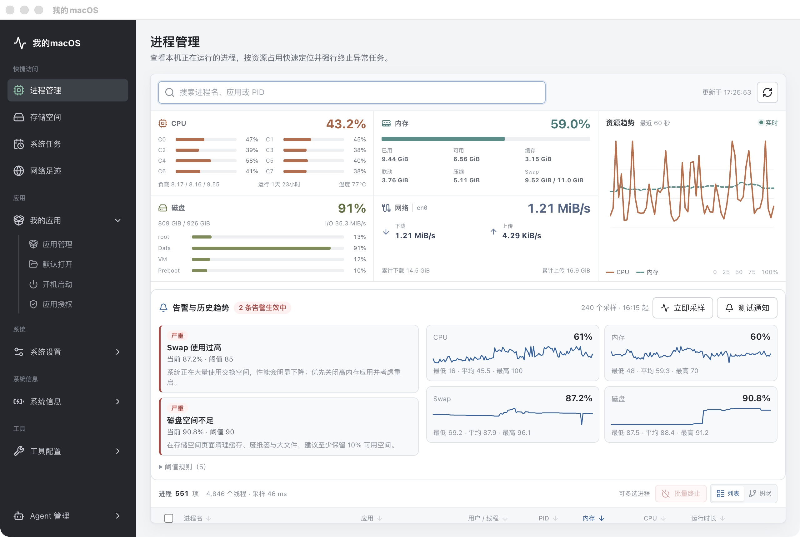
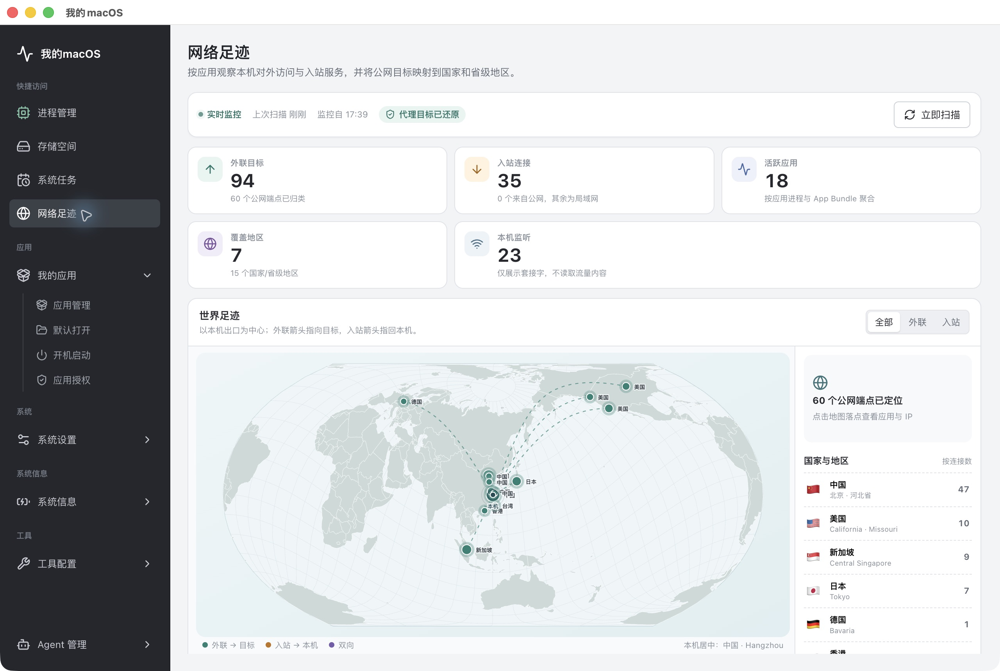
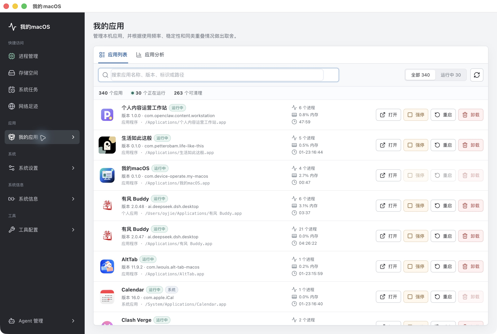
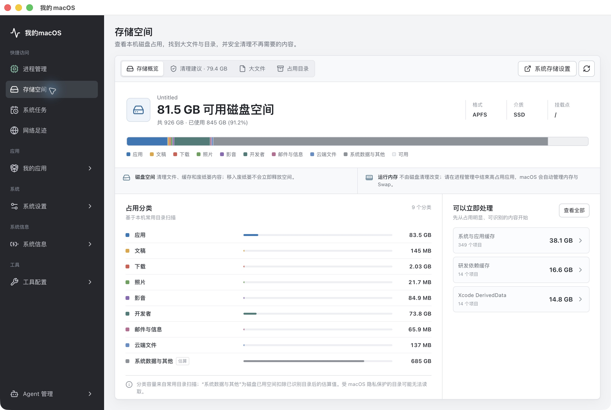
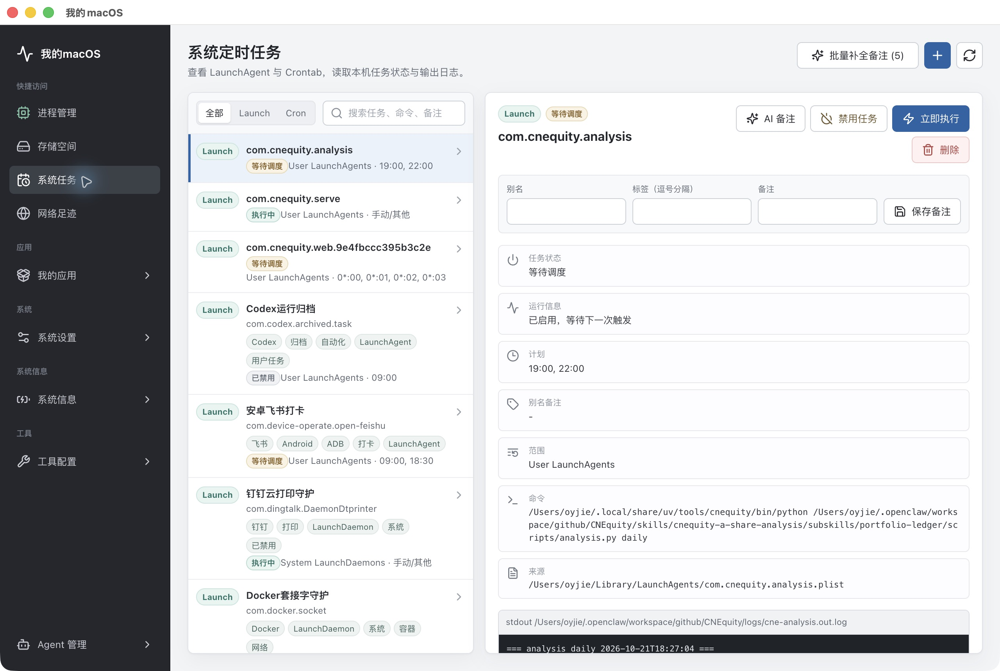

◉
实时资源监控
CPU 分核心、内存与 Swap 分解、磁盘 I/O、网络速率与温度，30 秒采样并支持阈值告警。
实时资源监控、应用治理、存储清理、网络足迹与系统定时任务。数据留在本机，操作直达系统底层，却比系统设置更好用。

不是另一个活动监视器，而是把「看清楚」和「动手处理」连在一起的 macOS 工作台。
CPU 分核心、内存与 Swap 分解、磁盘 I/O、网络速率与温度，30 秒采样并支持阈值告警。
340+ 应用清单，运行状态、进程数、内存占用一目了然，支持打开、重启、强停与卸载。
按应用、文档、下载、开发缓存分类占用，找出大文件与可清理目录，确认后安全移入废纸篓。
按 App Bundle 聚合外联、入站与监听连接，公网目标落在世界地图，支持 Clash / Mihomo 代理透视。
统一查看 LaunchAgent、LaunchDaemon 与 Crontab，支持备注、启用/禁用、立即执行与输出日志。
真实 ~/.ssh 管理、文件关联、系统设置直达，以及面向系统任务理解的 Agent 工作流。
所有截图来自当前正式版，点击可查看大图。




系统数据只在本机处理；网络足迹不读取流量内容。
监控、应用、存储与任务数据都在本地采集与展示，不上传服务器。
网络足迹只读取套接字与进程归属，不采集网页内容、请求正文或账号密码。
IP 归属地查询会向 ipwho.is 发送公网 IP，可在界面中随时关闭。